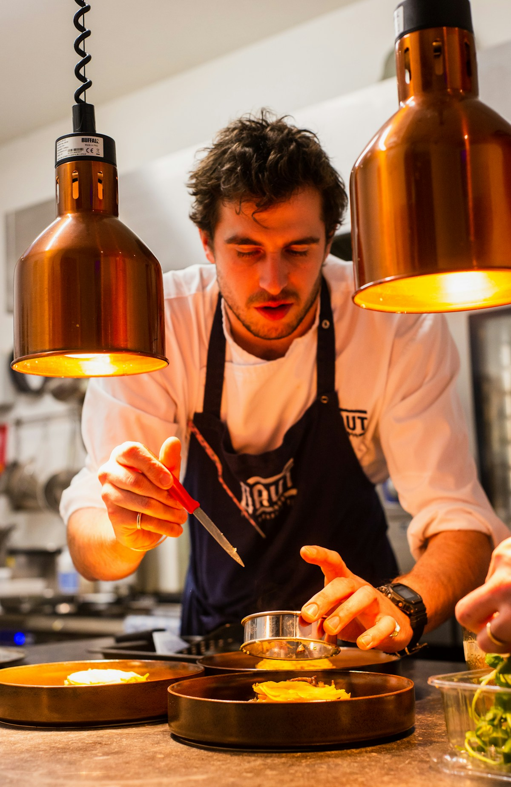

Emulsion Chemistry in Evening Sauces: Hollandaise, Beurre Blanc, and Velvety Reductions Demystified

In the classical French culinary canon, sauces are regarded as the soul of gastronomy—the unifying medium that bridges seared proteins, roasted vegetables, and starch foundations. Yet, master sauces like Hollandaise, Béarnaise, Beurre Blanc, and silky pan reductions are notorious for their fragility. A deviation of just five degrees in temperature or pouring liquid fat too rapidly can cause a glossy, velvety sauce to instantly separate into an unappetizing greasy pool. Demystifying sauce preparation requires understanding the physical chemistry of colloidal emulsions.
The Physics of a Fat-in-Water Emulsion
An emulsion is a colloidal dispersion of two immiscible liquids—where billions of microscopic fat droplets (the dispersed phase) are suspended throughout an aqueous solution (the continuous phase) with the aid of an amphiphilic emulsifier.
1. The Thermodynamic Battle: Interfacial Tension and Lecithin
Oil and water do not mix naturally due to fundamental thermodynamic forces. Water molecules form dense networks of strong hydrogen bonds, while non-polar triglycerides interact via weak van der Waals forces. Blending oil with water increases the interfacial surface area, which requires inputting mechanical work against high interfacial tension. Left alone, the oil droplets spontaneously coalesce to minimize contact area with water.
To stabilize this mixture, chefs rely on amphiphilic surfactants—molecules that possess both a hydrophilic (water-loving) polar head and a lipophilic (fat-loving) non-polar hydrocarbon tail.
In egg-yolk-based sauces (Hollandaise and Béarnaise), the primary emulsifying agent is lecithin (phosphatidylcholine), accompanied by low-density lipoproteins (LDLs). When whisked:
- The lipophilic tails of lecithin insert themselves into the suspended butterfat droplets.
- The charged hydrophilic heads face outward into the surrounding water and lemon juice phase.
- The identical electrostatic charges on droplet exteriors repel neighboring droplets, preventing them from fusing together.
 Figure 3.1: Cold-pressed plant lipids and herbal infusions require precise amphiphilic alignment to maintain stable suspension.
Figure 3.1: Cold-pressed plant lipids and herbal infusions require precise amphiphilic alignment to maintain stable suspension.
2. Temperature Windows: The Precise Thermal Balance
Emulsion sauces are extraordinarily temperature-sensitive. The stability of an egg-based warm emulsion operates within a narrow window between 130°F and 150°F (55°C to 65°C):
| Temperature Range | Molecular State of Emulsion | Sauce Consistency & Stability | Culinary Consequence |
|---|---|---|---|
| Below 120°F (49°C) | Butterfat begins solidifying into crystals | Stiff, pasty, dull appearance | Sauce thickens excessively; loses velvety gloss |
| 130°F – 145°F (55°C – 63°C) | Optimal lecithin unfolding & liquid fat suspension | Glossy, velvety, perfect ribbon drape | Peak culinary stability and unctuous mouthfeel |
| Above 155°F (68°C) | Egg proteins (ovalbumin/livetin) denature & coagulate | Irreversible protein curdling | Sauce breaks completely into scrambled eggs and oil |
3. Mechanical Shear: Why Whisking Speed and Flow Rate Matter
The viscosity of an emulsion depends on droplet size. Smaller droplets pack more tightly together, increasing the internal resistance to flow and creating that luxurious, spoon-coating texture.
Achieving ultra-fine droplets requires high mechanical shear. When initiating a sauce:
- The Initial Trickle: Warm melted butter must be added droplet-by-droplet at the start. If too much fat is poured before a stable base is established, the fat becomes the continuous phase, causing the sauce to invert and break instantly.
- Figure-Eight Whisking: Whisking in a rapid figure-eight motion maximizes shear across the bottom and sides of the curved saucier bowl, shearing fat into sub-micron droplets.
- Volume Fraction Limit (Phi ≈ 0.74): An emulsion can hold a maximum of approximately 74% fat by volume. If the volume of butter exceeds this critical threshold, there is physically insufficient water to surround the droplets, and the emulsion breaks. Adding a splash of warm water or lemon juice immediately restores the continuous phase.

Figure 3.2: Precise saucing with glossy, velvety emulsion reductions elevates the culinary aesthetics of dinner centerpieces.4. Beurre Blanc: Emulsifying Without Egg Yolks
In a classic French Beurre Blanc, an emulsion is formed without egg yolks. The emulsifying agents are the natural milk proteins (casein and whey) and milk phospholipid fragments present inside solid cold butter.
To master Beurre Blanc:
- Acidic Reduction Base: Finely minced shallots are simmered with white verjus and botanical vinegar until almost dry (au sec). The residual acid provides flavor and water phase volume.
- Cold Butter Whisking: Chilled cubes of unsalted butter are whisked into the warm reduction over low heat. The cold temperature ensures that butterfat melts slowly, releasing its water and natural milk proteins gradually to form a pale, creamy emulsion.
- Off-Heat Modulation: Moving the pan repeatedly on and off the flame maintains the emulsion between 125°F and 135°F, preventing the butterfat from breaking out of suspension.
5. Gelatin-Enriched Pan Reductions and Demi-Glace
Unlike fat-in-water emulsions, rich evening pan sauces and demi-glace reductions rely on gelatin-water molecular cross-linking.
When well-roasted bones and connective tissue are simmered for hours, tough collagen hydrolyzes into water-soluble gelatin. When this stock is reduced by 75% in a sauté pan with roasted vegetable fond and deglazing liquids, gelatin molecules form a loose three-dimensional matrix that traps water and suspends rendered fats, producing a brilliant natural sheen and lip-smacking richness without requiring flour or cornstarch thickeners.
6. The Rheology of Spoon Cling: Yield Stress and Mouthfeel Physics
The hallmark of a great dinner sauce is its nappe consistency—the ability to coat the back of a warm silver spoon without dripping off like water or congealing like paste. In fluid mechanics, this rheological characteristic is described as shear-thinning non-Newtonian flow.
When a guest lifts a forkful of food, the sauce experiences low shear stress, clinging securely to meat and vegetables. However, upon entering the mouth, the mechanical action of tongue against palate creates high shear stress. The sauce instantly thins, spreading evenly across taste receptors to deliver an instantaneous explosion of flavor, followed by a luxurious re-thickening that coats the oral cavity with a lingering savory film.
7. Emergency Repair: How to Rescue a Broken Sauce
If a Hollandaise or Béarnaise separates due to overheating or rapid fat addition, it can be rescued in under two minutes using the Fresh Continuous Phase Protocol:
- Place one tablespoon of warm water (or a fresh egg yolk) in a clean, warm bowl.
- Begin whisking vigorously while slowly drizzling the broken sauce into the fresh base.
- The fresh water provides a new continuous phase, re-encapsulating the free butterfat droplets into a smooth, restored emulsion.
- For cold broken vinaigrettes, whisking in half a teaspoon of prepared Dijon mustard (rich in natural mucilage and plant emulsifiers) will immediately pull the oil and vinegar back into a velvety suspension.
8. Frequently Asked Questions on Sauce Chemistry
Can an immersion blender be used instead of manual whisking?
Yes. An immersion blender generates extreme mechanical shear (over 10,000 RPM), creating smaller fat droplets in 30 seconds than several minutes of hand whisking, producing a remarkably stable and thick emulsion.
Why is clarified butter preferred over whole butter for Hollandaise?
Clarified butter removes water and milk solids, providing pure liquid butterfat that allows greater control over sauce thickness, though whole butter delivers richer flavor when properly emulsified.
How can a warm emulsion sauce be kept warm during a dinner party?
Store the finished sauce in an insulated thermal thermos pre-warmed with hot water. The thermos maintains the ideal 135°F window for up to two hours without risk of direct heat scorching.
What causes a sauce to develop an oily sheen on top?
An oily sheen indicates early emulsion destabilization (creaming). Whisking in one teaspoon of warm water immediately re-establishes the aqueous continuous phase and restores surface gloss.
Key Scientific Takeaways
- Emulsions suspend microscopic fat droplets in water via amphiphilic surfactants like egg yolk lecithin.
- Warm emulsions require precise thermal regulation between 130°F and 145°F to avoid crystalline solidification or protein curdling.
- High mechanical shear and slow initial fat incorporation prevent phase inversion and sauce breakage.
- Gelatin cross-linking in reduced roasted stocks creates natural velvety body and gloss without starch additives.